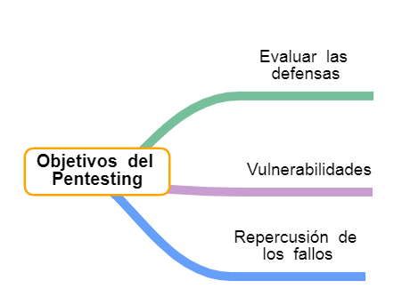

Conceptos Básicos Ciberseguridad. Realizando un plan de seguridad
5.2. Pruebas de Pentesting
Las pruebas de penetración (pentesting) son el método de hacking ético más utilizado para encontrar vulnerabilidades de seguridad que los autores de amenazas podrían explotar en sistemas informáticos.
¡Vamos a atacar nuestro propio sistema tal como lo haría un hacker malicioso real.!
1. ¿Fases del pentesting?
1. Recogida de información
Estas auditorías comienzan con la recogida, en fuentes de acceso abierto, de información sobre la empresa, los empleados, usuarios, sistemas y equipamientos.
2. Análisis de vulnerabilidades
Continúa con un análisis de vulnerabilidades que se intentarán explotar, incluso con técnicas de ingeniería social, atacando a los sistemas hasta conseguir sus objetivos.
Hay tres tipos de escaneo que se suelen realizar secuencialmente:
El escaneo de red, donde se determinan los host que se encuentran activos.
El escaneo de puertos, donde se determinan los puertos TCP/IP abiertos y disponibles.
El escaneo de vulnerabilidades, donde se determina la existencia de vulnerabilidades conocidas en los host.
3. Informe de resultados
Finalmente, se realiza un informe que indica si los ataques tendrían éxito, y en caso afirmativo porqué y qué información o acceso obtendrían, es decir, se simulan ataques tal y como los llevaría a cabo un ciberdelincuente que quisiera hacerse con el control del sistema o con la información en él contenida.
De esta forma, se puede determinar:
Si el sistema informático es vulnerable o no.
Evaluar si las defensas con las que cuenta, son suficientes y eficaces.
Valorar la repercusión de los fallos de seguridad que se detecten.
En este proceso los pentesters usan herramientas con amplias capacidades de intrusión que incluso podrían ser usadas con fines maliciosos, por lo que es fundamental considerar todos los posibles usos de estos desarrollos.
2. Tipos y objetivos del pentesting
Existen diferentes tipos de pruebas de penetración según la información inicial con la que cuenta el auditor, así, pueden ser:
De caja blanca
Si disponen de toda la información sobre los sistemas, aplicaciones e infraestructura, pudiendo simular que el ataque se realiza por alguien que conoce la empresa y sus sistemas
De caja gris
Si dispone de algo de información pero no de toda.
De caja negra
Si no dispone de información sobre nuestros sistemas; en este caso, se simula lo que haría un ciberdelincuente ajeno.

{"id":"82e87163-3394-48f3-9102-0c3b17bcf9cc","title":"Objetivos del Pentesting","mindmap":{"root":{"id":"6de510c9-f73b-4a3a-9afc-60705dfa71ef","parentId":null,"text":{"caption":"Objetivos del Pentesting","font":{"style":"normal","weight":"bold","decoration":"none","size":20,"color":"#000000"}},"offset":{"x":0,"y":0},"foldChildren":false,"branchColor":"#000000","children":[{"id":"0d95fa19-19e3-472b-b408-deb99c8926b6","parentId":"6de510c9-f73b-4a3a-9afc-60705dfa71ef","text":{"caption":"Vulnerabilidades","font":{"style":"normal","weight":"normal","decoration":"none","size":19,"color":"#000000"}},"offset":{"x":167,"y":30},"foldChildren":false,"branchColor":"#c89dcf","children":[]},{"id":"33bcaa60-2c5e-4b92-bb57-51acfb4beaf9","parentId":"6de510c9-f73b-4a3a-9afc-60705dfa71ef","text":{"caption":"Evaluar las defensas","font":{"style":"normal","weight":"normal","decoration":"none","size":19,"color":"#000000"}},"offset":{"x":158.015625,"y":-97.09375},"foldChildren":false,"branchColor":"#75c09b","children":[]},{"id":"45d344ff-9e05-4b4f-a380-f9356cc7edc0","parentId":"6de510c9-f73b-4a3a-9afc-60705dfa71ef","text":{"caption":"Repercusión de los fallos","font":{"style":"normal","weight":"normal","decoration":"none","size":19,"color":"#000000"}},"offset":{"x":149,"y":106},"foldChildren":false,"branchColor":"#659ffa","children":[]}]}},"dates":{"created":1632580337763,"modified":1634254402457},"dimensions":{"x":4000,"y":2000},"autosave":false}
1. Determinar si el sistema informático es vulnerable o no. 2. Evaluar si las defensas con las que cuenta, son suficientes y eficaces. 3. Valorar la repercusión de los fallos de seguridad que se detecten.
3. Repercusiones legales
Durante las pruebas de pentesting, el auditor o empresa que contratemos va a intentar traspasar las medidas de seguridad de nuestros equipos informáticos o de nuestras aplicaciones, poniendo en riesgo el funcionamiento de los sistemas, así como la información que contengan, que podría ser confidencial, reservada o privada.
Hay que tener en cuenta que:
Realizar accesos a estos equipos y a su información, incurriría en conducta delictiva, salvo que se realice con la debida autorización.
El contrato de pentesting, incluirá una autorización —por parte del titular de los equipos y sistemas—, clara e inequívoca, que autorizará la vulneración de las medias de seguridad de la organización en ciertos equipos perfectamente identificados, seleccionados para la ocasión.
De cara a que los posibles daños que pudieran ser causados no sean constitutivos de delito, el auditor o la empresa que realice las pruebas de penetración, deberá contar con la pertinente autorización en los mismos términos.
También será importante incluir cláusulas que marquen cuáles serán los canales de comunicación en caso de que el ataque tenga éxito.
Toda la información a la que se pudiera tener acceso, deberá permanecer bajo riguroso secreto mediante un contrato de confidencialidad, y en el caso de información personal se ha de redactar con el auditor un acuerdo específico como encargado para este tratamiento.
Basándote en los puntos anteriormente explorados, redacta un Acuerdo de autorización para realizar el pentesting en la empresa de Juan.
Este acuerdo debe incluir:
Autorización clara para traspasar las medidas de seguridad informática de la empresa.
Autorización para que los posibles daños que pudieran ser causados no sean constitutivos de delito.
Canales de comunicación en caso de que el ataque tenga éxito.
Contrato de confidencialidad de la información obtenida. Puedes seguir el modelo en PDF del apartado anterior.
Lumen dice ¿Necesitas ayuda para realizar el documento de texto?
En la Guía de competencia digital, puedes encontrar un manual para cómo usar el Procesador de texto para realizar la memoria. Haz clic aquí para acceder al recurso.
5. ¿Tienes los conceptos claros?
Selecciona las respuestas correctas y pulsa sobre el botón "responder"
 Las pruebas de penetración (pentesting) son el método de hacking ético más utilizado para encontrar vulnerabilidades de seguridad que los autores de amenazas podrían explotar en sistemas informáticos.
Las pruebas de penetración (pentesting) son el método de hacking ético más utilizado para encontrar vulnerabilidades de seguridad que los autores de amenazas podrían explotar en sistemas informáticos.